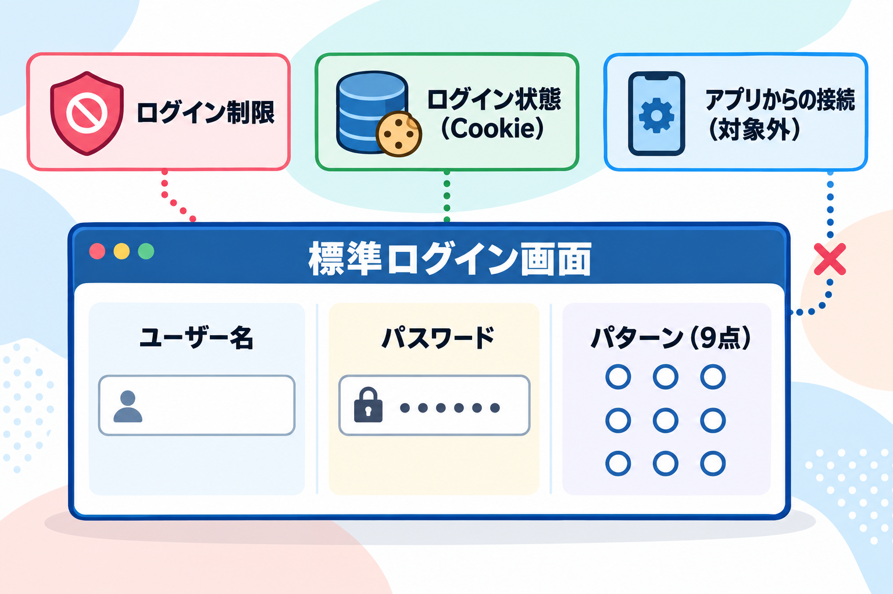

用語集
このマニュアルに出てくる言葉の意味をまとめました。

あ行
- アプリケーションパスワード
- WordPress の「プロフィール」画面で発行できる、アプリ専用のパスワードです。このパターンの対象外で、これまでどおりアプリから接続できます。
か行
- 管理画面
- WordPress にログインしたあとに使う、投稿や設定を行う画面です。このマニュアルでは、パターンの設定を行う画面を指します。
- プラグインの無効化
- プラグインを無効にすると、パターン入力欄が消えて標準のログインに戻ります。パターンを忘れたときの復旧方法として使います。ログイン済みの利用者がログアウトされるわけではありません。
さ行
- サイト共通パターン
- このサイトのすべての利用者が使う、1つのパターンです。ユーザーごとに変えることはできません。
- 状態の表示
- パターン欄の下に出る「未入力」「選択中：N点」「入力済み：N点」の表示です。入力の進み具合が分かります。
た行
- 追加のパターン認証
- パスワードに加えて、サイト共通のパターンを確認する仕組みです。パスワードとパターンはどちらも記憶する情報で、所有物や生体情報を確かめるものではありません。
は行
- パターン
- 9つの点を、決まった順番でなぞった形のことです。このプラグインでは、4点以上を使います。
- パターンロック
- スマートフォンの画面ロックなどで使われる、点をなぞって解除する方式のことです。このプラグインは同じ方式を WordPress のログインに使います。
- 標準ログイン画面
- WordPress にもともと備わっているログイン画面です。ユーザー名（またはメールアドレス）とパスワードを入力します。このプラグインは、ここにパターン欄を追加します。
ら行
- ログイン制限
- 認証の失敗が続いたときに、一定時間ログインを受け付けない仕組みです。回数と時間は管理画面で変えられます。
- ログイン状態（Cookie）
- 一度ログインすると、しばらくの間はログインしたままになります。この状態はパターンの対象外で、すでにログインしている利用者はそのまま操作できます。